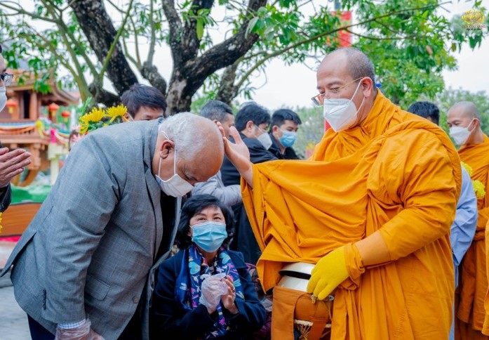
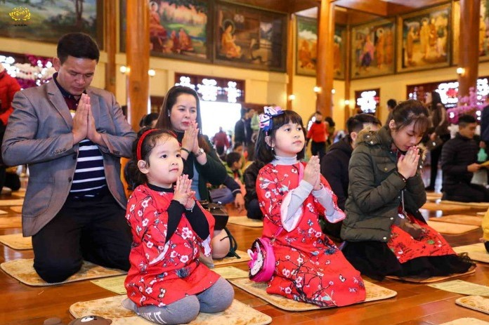

Tiếp tục câu chuyện của PGS TS Bùi Xuân Đính chia sẻ với VTC Now ngày 16/8/2022: “Cái vừa sai vừa phản cảm là Sư xoa đầu đệ tử, cả người lớn, trẻ con, cả phụ nữ và cả nam giới, cả người già, người trẻ. Và tôi thấy một cái rất phản cảm, không biết nó ở đâu, có phải chùa Ba Vàng không mà tôi thấy có cả một loạt các cháu nhỏ xì xụp lạy Sư mặc áo vàng”
Trước hết, chúng ta cần hiểu rõ “sai phạm” và “phản cảm” là gì? “Sai phạm” nghĩa là sai với pháp luật quy định; sai với giới luật, lời dạy của Đức Phật. Còn “phản cảm” là những điều không đúng, khiến cho người khác phẫn nộ.
Vậy hành động quý Thầy xoa đầu và Phật tử quỳ lễ sai phạm và phản cảm chỗ nào? Việc phó giáo sư kết tội chùa Ba Vàng như vậy có đúng sự thật hay không? Xin mời quý vị cùng tìm hiểu qua bài viết dưới đây!
Mục lục [Hiển thị]
- Thực tế, người đệ tử Phật có mong muốn được quý Thầy xoa đầu, chú nguyện những điều bình an hay không?
- Có phải do u mê mà Phật tử lễ quý Thầy?
- 1. Truyền thống lâu đời của người Việt
- 2. Học theo gương tâm cung kính của Đức Phật
- 3. Lễ chư Tăng là tự nguyện, không phải do u mê hay quý Thầy bắt ai phải lễ
- 4. Từ tâm biết ơn sinh ra cung kính, lễ bái
- Thực chất, ai mới là người sai phạm?
- Đôi lời gửi gắm tới PGS TS Bùi Xuân Đính
Thực tế, người đệ tử Phật có mong muốn được quý Thầy xoa đầu, chú nguyện những điều bình an hay không?
Có lẽ, bất cứ một người Phật tử nào cũng đều có chung một mong muốn, đó là được Thầy của mình đặt tay lên xoa đầu mình và chú nguyện chữ “Lành thay, phước báu”.
“Lành thay, phước báu” là khi mình phát tâm cúng dường, quý Thầy chú nguyện cho mình được mọi điều lành và phước báu mà mình sẽ được hưởng đem đến an lành cho mình. Đây là câu chú nguyện của Đức Phật dành cho tất cả những người cúng dường. “Lành thay” là mong điều an lành đến với mình, mong mình làm những việc lành. Vậy nên, người Phật tử đều rất mong muốn được Thầy của mình đặt tay lên đầu mình và chú nguyện cho mình như vậy.
Cái xoa đầu của người Thầy còn mang rất nhiều ý nghĩa đặc biệt đối với người Phật tử. Khi được quý Thầy đặt tên lên đầu, chúng ta cảm thấy như mình sẽ được gần gũi Thầy hơn, quý Thầy như một người cha của mình vậy. Bởi từ người Thầy mà mình mới học được đạo lý, biết được nhân quả.
Cái xoa đầu ấy còn khiến tâm trạng của chúng ta trở nên vui vẻ, hoan hỷ và hạnh phúc trong nhiều ngày. Từ đó, khiến mình nhớ lời Phật dạy, lời Thầy dạy hơn; sống tốt lên và được tăng trưởng đức tin, tâm cung kính trước oai nghi, đức hạnh của người Thầy mà biết trang nghiêm thân tâm hơn. Đây là sự linh thiêng của người con Phật - đệ tử của Tam Bảo, trong đó là đệ tử của chư Tăng.

Những người không theo tôn giáo, không theo đạo Phật mà thấy điều đó là phản cảm thì hãy biết tôn trọng niềm tin, tín ngưỡng của người khác. Chứ không phải chỉ vì không phù hợp với mình mà quy chụp cái mác phản cảm vô căn cứ như vậy. Việc chư Tăng xoa đầu nhân dân, Phật tử là điều đạo đức, mang đến những sự tốt đẹp cho mọi người và được số đông chấp thuận từ xưa tới nay thì tại sao lại cho là phản cảm được?
Mặt khác, ở chùa Ba Vàng, các Phật tử nhờ tu tập Phật Pháp mà chuyển hóa rất nhiều nghiệp chướng của bản thân và gia đình nên tâm biết ơn trong họ rất lớn. Vậy nên, khi cúng dường, họ cũng rất mong muốn được quý Thầy đặt tay lên xoa đầu mình để chú nguyện cho họ được an lành, hạnh phúc.
Có phải do u mê mà Phật tử lễ quý Thầy?
PGS TS Bùi Xuân Đính nói rằng: “Và tôi thấy một cái rất phản cảm, không biết nó ở đâu, có phải chùa Ba Vàng không mà tôi thấy có cả một loạt các cháu nhỏ xì xụp lạy Sư mặc áo vàng”.
Trước hết, phó giáo sư nói không biết có phải chùa Ba Vàng hay không mà lại khẳng định là chùa Ba Vàng và kết tội đây là sai phạm, phản cảm thì có vẻ không được công minh, chắc chắn. Còn thực tế đây là hình ảnh chư Tăng chùa Ba Vàng trong buổi lễ khất thực vào lễ vu lan báo hiếu, không rõ phó giáo sư có xem phải ảnh đã bị cắt ghép hay không.
Việc lễ lạy một người nào đó thì có rất nhiều nguyên nhân. Thứ nhất là do cung kính. Thứ hai là do giác ngộ. Giống như Vua và Hoàng hậu Thái Lan quỳ lạy chư Tăng là do giác ngộ, biết ơn quý Thầy vì đã dạy cho họ về nhân quả.
tại Bangkok (02/10/2006)
Bên cạnh đó, còn có nhiều yếu tố khác như: Truyền thống lâu đời, học hỏi theo tấm gương của Đức Phật, tâm biết ơn…
1. Truyền thống lâu đời của người Việt
Theo truyền thống, thói quen trong tín ngưỡng của người Việt Nam, khi đi tới chùa đều chắp tay vái, lễ Tam Bảo thì đã là vái, lễ chư Tăng rồi. Bởi chư Tăng cũng nằm trong Tam Bảo (Phật Bảo, Pháp Bảo, Tăng Bảo). Tuy rằng, chư Tăng không đứng ở đó, nhưng về bản chất, chúng ta đã lễ quý Thầy rồi.

“Mùng một Tết cha, mùng hai Tết mẹ, mùng ba Tết thầy” - Câu tục ngữ quen thuộc bao đời nay của dân tộc ta. “Tết Thầy” chính là tâm cung kính. Rất nhiều người học trò, vì cung kính người Thầy của mình mà lễ dưới chân thầy. Điều này không hề phản cảm chút nào mà trái lại, còn phải được nhân rộng ra thì thế gian này mới trở nên tốt đẹp được.
2. Học theo gương tâm cung kính của Đức Phật
Đức Phật là một bậc tối tôn ở trong Tam giới này. Vậy mà Ngài còn lễ cả đống xương khô.
Trong kinh Vu Lan báo hiếu có ghi: “Bấy giờ Thế Tôn, cùng với đại chúng, nhân buổi nhàn du, đi về phía nam, thấy đống xương khô, chất cao như núi, Đức Phật Thế Tôn, liền sụp lạy ngay, đống xương khô ấy.
A Nan bạch Phật rằng: Lạy Đức Thế Tôn, Ngài ở trên ngôi, chí tôn, chí quý, Thầy cả ba cõi, Cha lành bốn loài, thiên thượng nhân gian, thảy đều tôn kính, sao Ngài lại lễ, đống xương khô kia?
Đức Phật dạy rằng: Này A Nan ơi! Ngươi tuy xuất gia, theo Ta tu học, trong bấy nhiêu lâu, đã rộng rãi đâu, những sự nghe thấy, đống xương khô ấy, hoặc là ông bà, hay là cha mẹ, của Ta thân trước, ngàn muôn ức kiếp, đời đã cách xa, bởi thế nay Ta, chí thành kính lễ”.
Đức Phật cung kính đảnh lễ đống xương khô ấy, bởi đó là ông bà, hay là cha mẹ của Ngài trong ngàn muôn ức kiếp đã qua về trước. Chúng ta là những người đệ tử Phật, Đức Giáo chủ của mình còn lễ đống xương khô thì đương nhiên, chúng ta phải học được từ Ngài tâm cung kính. Việc lễ bái đi liền với cung kính.
3. Lễ chư Tăng là tự nguyện, không phải do u mê hay quý Thầy bắt ai phải lễ
Ở chùa Ba Vàng, có rất nhiều gia đình đến để cầu con. Khi thai nhi còn ở trong bụng mẹ, cả mẹ và con đều tu tập Phật Pháp, lễ Tam Bảo, lễ chư Tăng. Khi các bé ra đời, bố mẹ đưa lên chùa làm lễ sơ quy. Thường họ đều thỉnh quý Thầy xoa đầu các bé và cho một câu chúc nguyện an lành.
Đó là mong cầu của người dân, chứ không phải họ quá u mê mà lễ chư Tăng. Không phải chỉ những ai có bằng cấp, trình độ mới không u mê, còn lại người dân ai cũng u mê hết. Điều đó không đúng! Người lễ chư Tăng là do tâm cung kính của họ sinh ra lễ bái, chứ không phải họ là người không biết đến Phật Pháp, không tin Phật Pháp, không phải quý Thầy bắt họ phải lễ. Nếu họ không cung kính thì đã không lễ chư Tăng rồi.
4. Từ tâm biết ơn sinh ra cung kính, lễ bái
Có rất nhiều chùa tổ chức khóa tu mùa hè mà ở đó, các bạn trẻ được học vô vàn điều đạo đức. Vậy nên, chư Tăng đã trở thành người Thầy của các bạn ấy. Không những vậy, các bạn còn rất yêu quý chư Tăng. Có chuyện vui, buồn đều chia sẻ với quý Thầy để mong được tháo gỡ, chứ không phải riêng chư Tăng chùa Ba Vàng mới vậy.
Các bạn trẻ đến chùa biết cung kính, lễ chư Tăng thì dù sao, những điều bất thiện trong các bạn phần nào cũng được giảm đi, bởi được nghe chư Tăng dạy về chữ “Hiếu”. Chỉ cần quý Thầy cất tiếng tụng kinh Vu Lan thôi đã có thể khiến biết bao người động tâm, suy nghĩ về cha mẹ mà sám hối tội bất hiếu và trở nên hiếu thảo. PGS TS Bùi Xuân Đính có thể lên mạng, vào những bài đăng hoạt động chư Tăng tụng kinh Vu Lan để thấy ở đó có rất nhiều những bình luận tích cực.
Chi tiết câu chuyện trên được đăng tải tại nhóm Cảm nhận hạnh phúc mỗi ngày
Tất cả những nguyên do trên, tựu chung lại đều xuất phát từ sự chân thật, giác ngộ và cung kính chư Tăng của nhân dân, Phật tử. Từ đó mà sinh ra lễ bái, cúng dường quý Thầy.
Thử hỏi như vậy, chư Tăng đã đáng được làm người Thầy chưa? Đã đáng được người khác đảnh lễ biết ơn hay chưa mà ông Bùi Xuân Đính coi đó là phản cảm? Nếu Phó giáo sư dạy cho học trò của mình những điều đạo đức, những điều tốt đẹp mà học trò đến lễ tạ ơn thì phó giáo sư có cho đó là một điều phản cảm không?
Chắc chắn là không ai cho đó là điều phản cảm! Chỉ với trường hợp sự việc lần này của chư Tăng chùa Ba Vàng là phó giáo sư quy chụp như vậy. Hay có lẽ đây là quan điểm của riêng phó giáo sư về việc trò lễ thầy là phản cảm chăng?
Thực chất, ai mới là người sai phạm?
PGS TS Bùi Xuân Đính kết luận rằng: “Nói tóm lại cái hiện tượng mà báo chí, cộng đồng, mạng xã hội phản ánh thì cho thấy là Sư chùa Ba Vàng vừa sai, vừa phản cảm, gây ra những hành động gây phẫn nộ cho cộng đồng và cả những cái đệ tử, những cái Phật tử đi theo Phật giáo chân chính”.
Nói tới đây, chắc hẳn quý vị - những người có đủ nhận thức để nhận ra vấn đề và biết được ai mới là người sai phạm, khiến cho người khác phẫn nộ. Thời buổi này mà lại chạy theo mạng xã hội, họ phẫn nộ ở trên đó thế nào, mình cũng phẫn nộ theo mà chẳng cần phải tìm hiểu đúng sai, phải trái thế nào thì quả thật, đây chưa phải là cách tư duy hay, cách xử lý tốt.
Bởi lẽ, các thế lực phản động tạo ra trào lưu trên mạng xã hội không hề khó. Vậy mà, những người trí thức ở tầng lớp cao, dẫn dắt cho người dân lại chạy theo mạng xã hội, theo ý kiến số đông mà không phân tích, thẩm sát thì e rằng có gây nguy hiểm cho đất nước hay không? Do đó, chúng ta phải nâng cao cảnh giác bằng cách giữ bình tĩnh, phân tích kỹ lưỡng vấn đề.
Ở sự việc của chùa Ba Vàng, với tư cách là một người công dân, chư Tăng có làm sai Pháp luật hay không? Với tư cách là người tu, chư Tăng làm như vậy có sai với tôn giáo hay không, điều sai đó có được công nhận trong Pháp Phật và giới luật của Phật hay không? Hãy tư duy như vậy, chứ đừng thấy cộng đồng mạng nói gì là mình chạy theo!
Trong Phật Pháp, có những chư tăng tu sai cũng sa đọa, ví dụ như ông Đề Bà Đạt Đa. Vậy nên, kể cả có các Sư khác lên tiếng cho rằng sự việc của chùa Ba Vàng là sai thì chúng ta cũng không được tin ngay mà cần phân tích kỹ xem thực hư thế nào, chứ không phải thấy Sư nào nói cũng dễ dàng nghe theo. Giả dụ như có kẻ phản động, âm mưu đi xuất gia để chống phá nhà nước thì chúng ta cũng tin ngay hay sao? Dân gian có câu “Có mồm thì nhai, có đầu phải nghĩ”. Quả thực, đúng là như vậy!
Những người có học vị cao là những người có trách nhiệm dẫn dắt đất nước này nên càng cần phải phân tích kỹ lưỡng, cẩn trọng và cảnh giác cao độ. Nếu không, sẽ mắc mưu của các thế lực phản động. Như vậy mới đúng là người Việt yêu nước, chính thức là một người sống có tư duy, lập luận tốt.
Đôi lời gửi gắm tới PGS TS Bùi Xuân Đính
Qua bài phản biện này, mong rằng, PGS TS Bùi Xuân Đính sẽ tìm hiểu thêm về kinh Phật và sự việc một cách thấu đáo. Đừng vội nghe theo mạng xã hội vì hiện nay, các thế lực phản động, thù địch có thủ đoạn vô cùng tinh vi nên chúng ta phải rất cảnh giác.
Lần sau, nếu Phó giáo sư có đánh giá người tu thì hãy dựa trên cơ sở, chứ đừng chỉ đưa ra quan điểm cá nhân vô căn cứ như vậy.
Lời cuối cùng, xin chúc PGS TS Bùi Xuân Đính và gia đình được sức khỏe, an lạc, hạnh phúc trong giác ngộ và có những trải nghiệm ý nghĩa khi tư duy về giáo lý nhân quả của Đức Phật. Xin chúc quý bạn đọc và gia đình cũng được an lạc, hạnh phúc trong sự giác ngộ và tinh tấn tu tập Phật Pháp.
Trân trọng!
------
Ban Quản trị trang Phamthiyen.com xin kính mời PGS TS Bùi Xuân Đính và quý bạn đọc tiếp tục theo dõi các bài viết phản biện quan điểm của phó giáo sư sẽ được đăng tải trên website trong những ngày tới!
Các bài nên xem:
Bình luận


Quản trị trang
- Chủ quyền của đất nước;
- Các vấn đề về chính trị;
- Các phát ngôn cho mục đích hoặc có dấu hiệu chống lại Đảng, Nhà nước, chia rẽ và gây mất đoàn kết dân tộc, đoàn kết tôn giáo;
- Vi phạm hoặc có dấu hiệu vi phạm chính sách, pháp luật của Nhà nước và thuần phong, mỹ tục của dân tộc.
Cho mục đích trên, chúng tôi tuyên bố có quyền xóa, gỡ bỏ hoặc thực hiện bất kỳ biện pháp nào thuộc quyền của Quản trị trang và Chủ sở hữu; và tố cáo với cơ quan chức năng hoặc thực hiện các biện pháp pháp lý cần thiết để ngăn chặn, xử lý các hành vi vi phạm hoặc hành vi có dấu hiệu vi phạm nêu trên.